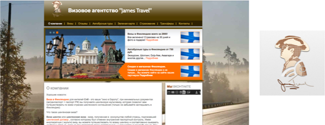
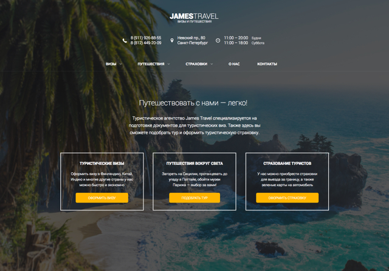
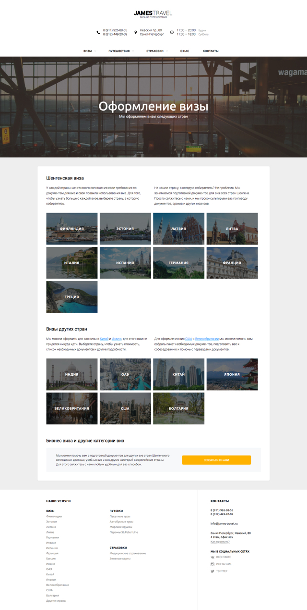

James Travel
James Travel — это небольшое туристическое агентство в центре Санкт-Петербурга, специализирующееся на подготовке документов для туристических виз. Здесь я начинала свою карьеру как турагент, но в итоге закончила как дизайнер.
Когда я только пришла работать в это агентство, сайт и логотип выглядели так: 
Редизайн
Мне хотелось исправить эту ситуацию, и поэтому в течение нескольких месяцев в свободное от работы время я разработала новую версию сайта:   Это был мой первый опыт дизайна и разработки сайта.
В 2016 году во время учебы в Школе дизайна НИУ ВШЭ я разрабатывала новый логотип и айдентику, а также новую версию сайта. Презентацию можно посмотреть здесь. Позже логотип я доработала, а от этой версии сайта и вовсе отказалась.
Финальная версия сайта
В 2017 году я снова вернулась к редизайну сайта, так как необходимо было адаптировать сайт под мобильные устройства.
Целевая аудитория компании — люди, впервые отправляющиеся в путешествие за границу. Им необходимо помочь разобраться со всеми сложностями, которые возникают при подготовке к путешествию. Услуги, которые оказывает James Travel — это оформление или подготовка документов для виз, бронирование туров, отелей, перелетов, страхование и другие сопутствующие услуги. Так как компания небольшая, она не ориентирована на обслуживание большого потока клиентов. Вместо этого они стремятся сохранять хорошие отношения с постоянными клиентами и оказывать качественные услуги.
Моей задачей было передать принципы компании — дружелюбие, желание помогать людям открывать мир. Так как оформление виз — основная деятельность компании, на сайте необходимо было подробно и доступно рассказать клиентам, визы в какие страны помогают оформлять в компании, как происходит процесс оформления, какие документы для этого нужны, какие услуги входят в стоимость оформления.
 Итоговая версия сайта: james-travel.ru
Итоговая версия сайта: james-travel.ru
Ссылки: Разработка логотипа Разработка последней версии сайта Первая версия сайта Проект сайта и разработка айдентики во время учебы в Школе дизайна НИУ ВШЭ james-travel.ru